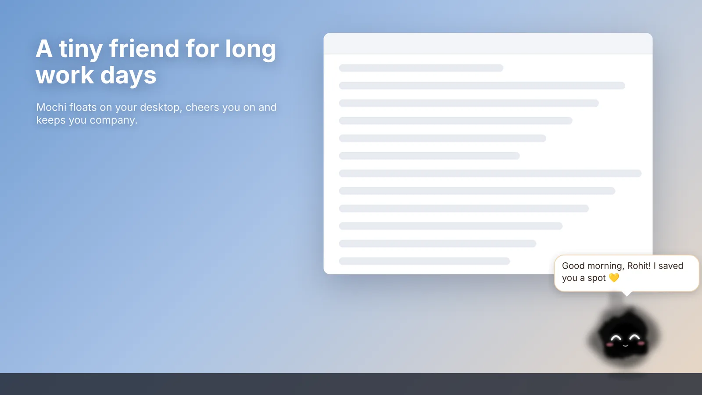

Download
Get your buddy
Mochi is free on the Microsoft Store. It installs in a few seconds and updates itself.
System requirements
- Windows
- Windows 10 or 11, 64-bit
- Space
- About 400 MB
- Internet
- Only to install. Mochi runs offline.
After you install
Mochi appears near the bottom of your screen and asks what to call you. Right-click it, or the tray icon, for the menu.
Direct download
Can't use the Store? Get the installer from our releases page. Windows may show an "unknown publisher" warning for it, because only the Store version is signed.
How to play with your buddy
- Click
- Pet it
- Double-click
- Give it a snack
- Drag
- Carry it anywhere on screen
- Right-click
- Open the menu: buddies, play, focus, reminders, language and more
